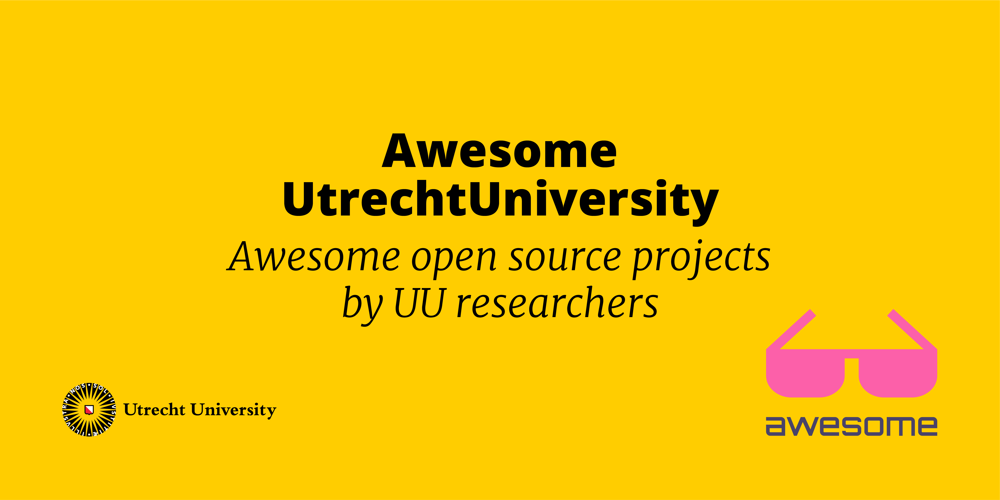

Awesome Utrecht University

A curated list of awesome research code, software, manuals, and more on Git, developed by Utrecht University researchers, students, and employees. The list can be your starting point to find interesting UU projects, and get inpired and learn from other projects. Is your project also "awesome"? Add it to this list (see Contributing).
"The purpose of this list is to have a collection of projects using Git version control, that score high on openness, reusability, and transparency in order to showcase good examples of open practices. In the context of this, awesome refers to projects that showcase the FAIR (findability, accessibility, interoperability, and reusability) and Open Science spirit. This is for example shown in repositories that have a license that permits reuse and a README file with clear documentation.
In order to promote open science, Utrecht University has launched the Open Science Programme. Beside topics like Open access, Public engagement, and Recognition and rewards, there is a strong focus on FAIR Data and Software. This awesome list was created by efforts of the track of FAIR Data and Software to help researchers to find good examples. We believe that learning by example is very useful in the field of Open Science and FAIR Data and Software."
The initial collection of projects was made based on the collected repositories from the SWORDS-UU project. Repositories were considered when they have
- a license
- 25 stars or fulfill 4/5 FAIR criteria.
❣️ We are looking for Utrecht University researchers that are interested in helping to maintain this list. Please reach out if you would like to assist (see Contact)!
- Awesome Utrecht University
- Research code
- Research software
- Research data
- Research project management
- Education and workshops
- Collaboration groups
- Add project to this list
- Contact
Research code
Research projects with supplementing code stored on online Git repositories.
- ContrastiveExplanation - Contrastive Explanation (Foil Trees), developed at TNO/Utrecht University
- GeoNewsMiner The GeoNewsMiner (GNM): An interactive spatial humanities tool to visualize geographical references in historical newspapers
- PCR-GLOBWB_model - PCR-GLOBWB (PCRaster Global Water Balance) is a large-scale hydrological model intended for global to regional studies and developed at the Department of Physical Geography.
- PuReGoMe - Notebooks of the PuReGoMe Project of the Netherlands eScience Center and Utrecht University.
- Saliency-Tubes-Visual-Explanations-for-Spatio-Temporal-Convolutions - Implementation of Saliency Tubes for 3D Convolutions in Pytoch and Keras to localise the focus spatio-temporal regions of 3D CNNs.
- SoftPool - Code for approximated exponential maximum pooling.
- Squeeze-and-Recursion-Temporal-Gates - Code for : [Pattern Recognit. Lett. 2020] "Learn to cycle: Time-consistent feature discovery for action recognition" and [arXiv] "Right on Time: Multi-Temporal Convolutions for Human Action Recognition in Videos".
Research software
Software developed by researchers and employees of Utrecht University. The software in this list is installable and can be used in new or existing research projects or courses.
- asreview - Active learning for systematic reviews
- bain - Bayes Factors for Informative Hypotheses
- mice - Multivariate Imputation by Chained Equations
- osmenrich - Enrich sf data with geographic features from OpenStreetMaps.
- parcels - Main code for Parcels (Probably A Really Computationally Efficient Lagrangian Simulator)
- pcraster - Environmental modeling software
- pdb-tools - A dependency-free cross-platform swiss army knife for PDB files.
- recordlinkage - A toolkit for record linkage and duplicate detection in Python
Research data
Research data stored in git repositories.
- childdevdata - R package with Child Development Data from ten studies, containing 1,116,061 assessments made on 10,831 unique children during 28,465 visits, covering 21 different instruments.
- CoronaWatchNL - Numbers concerning COVID-19 disease cases in The Netherlands by RIVM, LCPS, NICE, ECML, and Rijksoverheid.
Research project management
Tools for research project management, data management, and software management.
- worcs - Rstudio project template and convenience functions for the Workflow for Open Reproducible Code in Science (WORCS)
Education and workshops
Open teaching materials are guidelines, tutorials or any other educational material. Where to discover further resources relevant for UU research like books, podcasts, additional websites and newsletters.
- Textbook on Quantitative Methods and Statistics Textbook on Quantitative Methods and Statistics aimed at humanities researchers and students (English version, EN) (Dutch version, NL)
- workshop-introduction-to-R-and-data - Material for the workshop 'Introduction to R & data' by RDM Support
Collaboration groups
Collaboration Groups are organizations with many involved parties.
- CLARIAH - CLARIAH offers humanities scholars a Common Lab providing access to large collections of digital resources and innovative tools for research
- stan - Stan is a state-of-the-art platform for statistical modeling and high-performance statistical computation. Thousands of users rely on Stan for statistical modeling, data analysis, and prediction in the social, biological, and physical sciences, engineering, and business.
Add project to this list
Do you know about a project that should be in the Awesome Utrecht University list? This could be your own project or a project of one of your colleagues. We would love to hear about that project! The contribution guidelines help you to propose a new project to the list.
Contact
This awesome list was created by efforts of the FAIR Data and Software team of Utrecht University. If you have any question or remark about this list, do not hesitate to contact Keven Quach and Jonathan de Bruin via mail or open an issue on GitHub.
Are you a Utrecht University researcher looking for support on making your research code and data open and FAIR? Or do you want to brainstorm about these topics? Feel free to contact RDM Support.